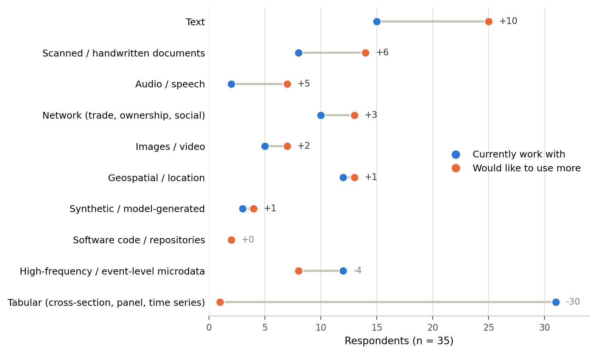
1 Introduction
The world is unstructured. Empirical research has relied on data that arrives already structured into tables, but the majority of information about economic behavior is embedded in unstructured sources: text, images, networks, sequences, and multimodal sources.
The course proceeds through four connected modules. The first focuses on textual analysis for which current tools are the most advanced and introduces latent representations of text, from bag-of-words and topic models to static and contextual language models. The second examines large language models and AI agents as tools for annotation, classification, simulation, and synthetic data generation. The third focuses on econometric issues created by ML-generated variables, including measurement error, construct validity, model interpretation, and causal reliance. The final module extends the discussion beyond text to images, networks, sequences, and multimodal models.
The goal is not to deploy machine learning systems as engineers (which becomes very feasible with current AI tools), but to help them become critical and effective users of these methods in economic research. Economists bring a comparative advantage in understanding data-generating processes, defining meaningful constructs, and designing credible empirical strategies. This course builds a bridge between that advantage and modern machine learning methods for unstructured data.
2 What do we mean by “unstructured data”?
Unstructured data is information that does not arrive in a predefined schema of fields and values: text, images, audio, transaction logs, the raw record of economic activity as it happens. Because statistical methods operate on rectangular arrays, empirical research has always depended on an intermediate layer of infrastructure that converts this raw record into structured form. Firm production is entered into accounting ledgers and summarized in financial statements; household spending is elicited through expenditure surveys and aggregated into tables.
Different as they look, both pipelines perform the same act of abstraction: choose which dimensions to record, design an encoding for them, then apply it, recording, classifying, and aggregating the raw material into the table that survives.
Two properties of this process matter for what follows:
- The dimensions must be fixed before the data are collected, so information that was not anticipated is lost irretrievably.
- Each step has historically required specialized human labor (accountants, survey enumerators, statistical agencies), which made the infrastructure expensive to build and slow to change.
2.1 Measurement
NoteSource and attribution
These notes follow the framework developed by Melissa Dell in her NBER Summer Institute Methods Lecture, Measurement in the Age of AI: Discovery, Definition, and Observation (Dell & Rambachan, NBER Summer Institute Methods Lecture, 2026).
The structuring pipeline above is one instance of a more general act. Measurement maps complex, high-dimensional reality into lower-dimensional representations, preserving some features while discarding or transforming others. Formally, it specifies and implements a function \(m(\cdot)\): \[ X \;\xrightarrow{\;m(\cdot)\;}\; m(X). \]
Simplification is not a regrettable compromise; it is the point. A representation is useful only because it is simpler than what it represents. Borges makes this vivid in “On Exactitude in Science,” where cartographers in pursuit of perfect representation produce a map “whose size was that of the Empire,” and the map is useless because it no longer reduces anything. This is the force of Korzybski’s dictum that the map is not the territory: a map, like a measure, earns its usefulness precisely by differing from what it represents.
Selectivity does not make measurement merely subjective. The relevant question is never “does this measure capture reality?” but rather: does this simplification preserve the features needed to support useful inference about the underlying high-dimensional world, for the research question at hand? Measurement is a disciplined, fallible, and purpose-oriented attempt to learn from reality.
2.1.1 There is rarely one way to measure
Because \(X\) is high-dimensional, there is rarely a unique way to measure a given concept. The object we should have in mind is a family of candidate functions, \[ X \;\longrightarrow\; m_j(X), \qquad j = 1, \dots, J, \] where different \(m_j\) preserve different features of \(X\) and may therefore support different empirical conclusions.
Consider measuring the population of a region. A census, satellite imagery, mobile-phone records, and nighttime lights are four distinct \(m_j\) applied to the same underlying reality. Each preserves something the others discard. The census captures demographic composition but is infrequent and misses informal settlements; nighttime lights are continuous and global but confound population with electrification and income. A finding that holds under one \(m_j\) need not hold under another.
2.1.2 The three stages of measurement
Colloquially we think of measurement as observing a quantity with an instrument. End to end, however, it involves three distinct stages, each carrying a different kind of uncertainty and each traditionally examined through a different disciplinary lens.
ImportantThe measurement pipeline
Discovery. Given the complexity of the world, what features exist and are worth measuring? Uncertainty: which patterns, dimensions, or relationships exist at all. Lenses: theory and contextual knowledge; exploratory analysis; unsupervised learning and data-driven discovery.
Construct definition. How should the relevant concept be operationally defined? Uncertainty: how a phenomenon of interest should be translated into an operational construct for a given research setting. Lenses: theory and domain expertise; piloting and qualitative validation; externally available proxies; the formal literatures in psychometrics and survey design.
Observation. How can that definition be implemented at scale? Uncertainty: how accurately the construct can be observed at scale, and how errors propagate to the target parameter. Lenses: measurement error; semiparametric inference with missing data.
The structuring pipelines from the previous section are measurement in exactly this sense (Figure 1): choosing dimensions is discovery, designing an encoding is construct definition, and recording and aggregating is observation.
1 · Discoverywhich dimensions matter?
2 · Construct definitionhow to encode them?
3 · Observationrecord and aggregate at scale
Firm production
accounting
accounting
→
Track revenue, costs, and assets —
not the tone of the board meeting
not the tone of the board meeting
→
Accounting standards define each item,
e.g., when a sale counts as revenue
e.g., when a sale counts as revenue
→
Post every transaction to the ledger;
audit and sum into financial statements
audit and sum into financial statements
Household consumption
expenditure surveys
expenditure surveys
→
Track what and how much households buy —
not who did the shopping
not who did the shopping
→
The questionnaire defines spending:
item categories, recall period, units
item categories, recall period, units
→
Field it to a sample; code, weight,
and tabulate the responses
and tabulate the responses
→
m(X): the structured objects researchers analyze
⇣
What the scheme does not accommodate is discarded — lost irretrievably
3 Latent Representation: from Unstructured to High-Dimensional
The challenge of working with unstructured data is that it is often difficult to define structure, and the cost of measurement increases as the dimensionality and complexity of the data grow. For example, a single image can have millions of pixels, a document can contain thousands of words, and a network can have intricate connectivity patterns. Directly analyzing such raw data is computationally infeasible and statistically inefficient.
To make unstructured data usable for empirical research, it is necessary to transform it into lower-dimensional representations that capture the essential information while discarding irrelevant details. These representations can then be used as inputs for econometric models, machine learning algorithms, and other analytical tools.
3.1 From raw data to tensors
Whatever the source, a model does not process sentences or pictures; it processes tensors — multi-dimensional arrays of numbers. The first step of any pipeline is therefore to put the raw record into numerical form, and the two most common data types arrive in very different shape.
- Images are already numerical. A color image is a grid of pixels, a tensor of size \(\text{height} \times \text{width} \times \text{channels}\), where the three channels are red, green, and blue intensities between 0 and 255. A \(224 \times 224\) photograph is \(150{,}528\) numbers before any modeling begins.
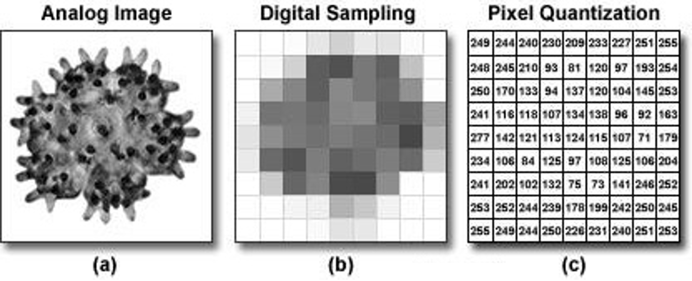
- Text has to be discretized first. A string has no natural numerical form. Tokenization segments the sequence into discrete units called tokens — words, sub-words, or characters — and assigns each unique token an integer ID, so that
"Trade policy matters"becomes something like[1045, 3021, 2891]. Modern models use sub-word tokenizers (byte-pair encoding, WordPiece), which split a rare word such as protectionism into familiar pieces (protection + ism) and so never meet a word they cannot represent.
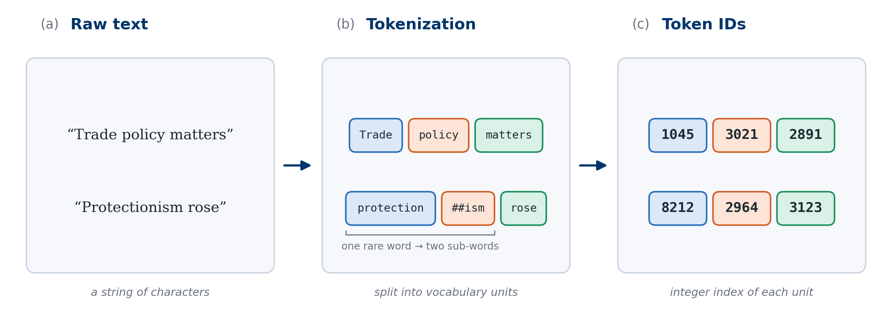
The integer IDs are labels, not quantities: token 3021 is not “more” than token 1045. Everything that follows is about how to turn these labels into vectors whose geometry means something.
3.2 Why start with text?
Most of this lecture is about text, and so are the next two. The methods themselves are not specific to text: the same ideas carry over to images, audio and networks, which the course returns to at the end. But text is the natural place for this class to start, for four reasons.
First, text is where the data are, and the data type with the widest gap between current and desired use in this class. “An ever-increasing share of human interaction, communication, and culture is recorded as digital text,” as Gentzkow, Kelly and Taddy open their survey of text as data in economics (Gentzkow, Kelly & Taddy, 2019), and the same is true of this class: among the data types in the pre-course survey, text shows both the strongest demand and the widest gap between current and desired use (Figure 4).
Second, text has the clearest path of any unstructured data from simple methods to the models in use today, and we can walk through it step by step. Word counts, embeddings and transformers were each built for language first and adapted to images and audio later. Each was designed to fix something the one before it could not do. Following that sequence shows why each method exists, not just how to run it. Text also makes those limits easy to see, because you can read it. The methods fall into three broad families, which the rest of this lecture takes in order.
| Family | Idea | Landmark methods |
|---|---|---|
| High-dimensional count vectors | A document is a sparse vector of word counts over a fixed vocabulary | Bag-of-words, TF–IDF; latent semantic indexing (Deerwester et al., 1990); latent Dirichlet allocation (Blei, Ng & Jordan, 2003) |
| Static word embeddings | Each word is a dense vector learned from the contexts it appears in | Word2Vec (Mikolov et al., 2013); GloVe (Pennington, Socher & Manning, 2014) |
| Contextual embeddings | A word’s vector depends on the sentence around it | ELMo (Peters et al., 2018); GPT (Radford et al., 2018); BERT (Devlin et al., 2019) |
Third, text records things that other data cannot. Satellite images and sensors mostly capture the physical world: night lights, crop cover, traffic. Much of what economists care about is not physical. Beliefs, intentions, rules and commitments are recorded mainly in words. A central bank’s reasoning is in its minutes, a firm’s strategy in its annual report, an invention’s scope in its patent claims, and a court’s logic in its opinion. At best, a statistical agency tabulates a small part of what these documents contain, and the rest never reaches a dataset. Most of the examples in this lecture, from the novelty of a patent to the attitudes of an individual judge, measure something that exists only in text.
Finally, large language models are models of text. If you plan to use them as annotators or research assistants, you need to know when to trust them, and that starts with understanding how they turn text into numbers. This lecture ends with the architecture behind them.
3.3 The simplest approach: counting words
3.3.1 Bag of words model
The bag-of-words model is the oldest way of turning a document into a vector, and it is the right place to start because it keeps every step of the abstraction in plain view. It is worth reading it against the three stages in Figure 1: fixing the vocabulary is discovery (which dimensions matter), one-hot encoding is construct definition (how each dimension is encoded), and tallying words into the document–term matrix is observation. Nothing is buried inside a learned model — which is also why every one of its limitations is easy to see.
A bag-of-words representation treats a document as a multiset of word counts: which terms appear, and how often, with word order and syntax discarded. The name is the argument. Shake the document until the grammar falls out, and keep what settles at the bottom of the bag.
Fix a vocabulary \(V\) — the set of terms we are willing to count — and assign each term an index. Every term is then represented by a one-hot vector of length \(|V|\), carrying a single 1 in its own position and zeros everywhere else:
\[ \mathbf{v}_{\text{tariff}} = (1, 0, 0, \ldots, 0)^{\top}, \qquad \mathbf{v}_{\text{trade}} = (0, 1, 0, \ldots, 0)^{\top}. \]
The vocabulary, in other words, is the basis: each word gets an axis of its own, and documents live in a space with one dimension per word. A document \(d\) is then the count-weighted sum of the one-hot vectors of the words it contains,
\[ \mathbf{V}_d \;=\; \sum_{w \,\in\, d} \operatorname{count}(w)\, \mathbf{v}_w , \]
so the \(j\)-th entry of \(\mathbf{V}_d\) is just the number of times term \(j\) occurs in \(d\). Stack documents as rows and the result is the document–term matrix, the object nearly every text method in this course either consumes or tries to improve upon (Table 2).
| Document | Tariff | Trade | Subsidy | Export |
|---|---|---|---|---|
| Policy A | 5 | 10 | 0 | 2 |
| Policy B | 0 | 8 | 12 | 1 |
Now the defining property of this encoding, and the reason the rest of the course exists:
NoteKey idea: the encoding knows nothing about meaning
For any two distinct terms, the one-hot vectors are orthogonal — \(\mathbf{v}_{\text{tariff}}^{\top} \mathbf{v}_{\text{trade}} = 0\). Every pair of distinct words is therefore exactly as unrelated as every other pair: tariff sits as far from trade as it does from zucchini. The representation carries no semantic information whatsoever.
This is not a bug to be patched so much as a statement about where the structure has to come from. Because the encoding supplies none, any sense in which tariff and trade are related must be recovered from the data — from the fact that the two terms co-occur across many documents in ways that tariff and zucchini do not. Topic models extract that structure from document-level co-occurrence; word embeddings go further and abandon orthogonality altogether, placing terms in a far lower-dimensional space in which distance is meant to track meaning. Both are responses to the same deficiency.
The second thing discarded is order, and here the cost is easier to underestimate. “The tariff did not raise prices” and “the tariff did raise prices” differ in one word and make opposite economic claims, yet their bags are nearly identical. Negation, modality, and who-did-what-to-whom all dissolve. Whether this matters is an empirical question about the construct being measured, not a question of principle: if the target is roughly how much is this document about trade policy, counts are a serviceable proxy, which is why a dictionary method as simple as the Baker, Bloom and Davis (2016) uncertainty index works at all. If the target is whether a central banker signalled tightening or ruled it out, discarding negation is fatal.
One last wrinkle is worth flagging. Bag-of-words does not reduce dimensionality — it raises it. A realistic vocabulary runs from tens of thousands to millions of terms, so \(\mathbf{V}_d\) is enormous, while any single document touches a vanishing fraction of it. The vectors are overwhelmingly zero, which is exactly the sparsity the slide refers to, and it is what makes the representation cheap to store and fast to compute with even at this width. The compression we are after comes later: reweighting the counts (TF–IDF), then projecting the whole sparse space down onto a small number of latent dimensions.
3.3.2 Term frequency and inverse document frequency (TF–IDF)
Question: Even with high dimensionality using vocabulary, we still assume away a lot of the structure in the text, what are they? such as word order and syntactic relationships. How can we adjust our representation to capture more of the meaningful patterns in the data?
Raw counts treat every occurrence of every word as equally informative. They are not. The, and, and of appear in nearly every document and say nothing about any of them; in a corpus of trade-policy documents, even trade appears everywhere and does little to tell one document from another. A word that appears often in this document but rarely in the rest of the corpus is the one that tells us what the document is about.
TF–IDF (term frequency–inverse document frequency) builds that intuition into the weights. For term \(v\) in document \(d\) in a corpus of \(D\) documents, \[ \text{TF-IDF}_{d,v} \;=\; \underbrace{x_{d,v}}_{\text{TF}} \;\times\; \underbrace{\log\!\left( \frac{D}{\sum_{j=1}^{D} \mathbb{1}(x_{j,v} > 0)} \right)}_{\text{IDF}}, \] where \(x_{d,v}\) is the count of \(v\) in \(d\) and the denominator of the IDF term counts the documents that contain \(v\) at least once. The IDF factor is zero for a word that appears in every document and grows as the word becomes rarer across the corpus. If tariff appears many times in one document but in few others, it receives a high weight in that document. Stop words and ubiquitous domain words are filtered out automatically, without a hand-built list. (Implementations vary — term frequency is often divided by document length, and the IDF is often smoothed — but the logic is the same.)
TF–IDF changes the weights on the axes; it does not change the axes. Each word is still its own orthogonal dimension, so the key limitation of bag-of-words survives intact (Figure 5): two sentences that a trade economist reads as the same claim have zero similarity.
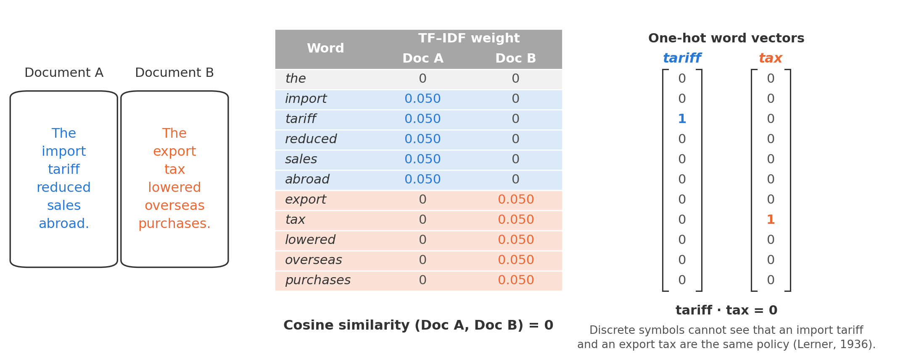
3.3.3 Application: measuring breakthrough innovation over the long run
Kelly, Papanikolaou, Seru and Taddy (2021), “Measuring Technological Innovation over the Long Run,” American Economic Review: Insights 3(3): 303–320 show how far a carefully designed TF–IDF measure can go, and also how the design has to be adapted to the economic question.
The measurement problem. The standard measures of a patent’s importance have large gaps. Citations were not consistently recorded by the USPTO until 1947, and they depend on the discretion of inventors and examiners. Stock-market reactions to patent grants are only available once stock-price data begin, in the late 1920s. Neither can tell us much about the second half of the nineteenth century, when much of modern technology was invented. The authors instead use the text of more than 9 million U.S. patents, back to 1840.
Why standard TF–IDF fails here. The IDF is computed over the whole corpus, so it uses information from the future. Consider Nikola Tesla’s alternating-current patents of 1888. The term alternating current appears in thousands of twentieth-century patents, so whole-corpus IDF gives it low weight — and the revolutionary patent looks commonplace. The more successful a breakthrough, the more its vocabulary spreads, and the more standard TF–IDF penalizes it.
Step 1: backward-looking weights (TF–BIDF). The fix is to measure each word’s rarity using only the history up to the patent: \[ \text{BIDF}_{w,p} \;=\; \log\!\left( \frac{\#\ \text{patents prior to } p}{1 + \#\ \text{patents prior to } p \text{ containing term } w} \right). \] Each patent \(i\) becomes a vector \(V_{i,t}\) of \(\text{TF}_{w,i} \times \text{BIDF}_{w,t}\) weights across the vocabulary, normalized to unit length, and the similarity between two patents is the cosine similarity \(\rho_{ij} = V_{i,t} \cdot V_{j,t}\).
Step 2: novelty, impact, and quality.
- Novelty is measured by backward similarity \(BS_j\): patent \(j\)’s total similarity to patents granted in the previous 5 years. Low \(BS\) means the patent is conceptually distinct from its predecessors.
- Impact is measured by forward similarity \(FS_j\): its total similarity to patents granted in the next 10 years. High \(FS\) means later inventions build on its ideas.
- An important patent is both: the quality indicator is \[ q_j = \frac{FS_j}{BS_j}, \] and breakthrough patents are those in the top 10% of the \(q_j\) distribution. The aggregate innovation index is the number of breakthroughs granted each year divided by U.S. population.
Figure 6 shows the idea. A routine sewing-machine patent is closely followed by a long series of near-identical sewing-machine patents; a patent for an apparatus for exhibiting photographs of moving objects is followed by a diverse set of camera and projection devices it helped make possible.
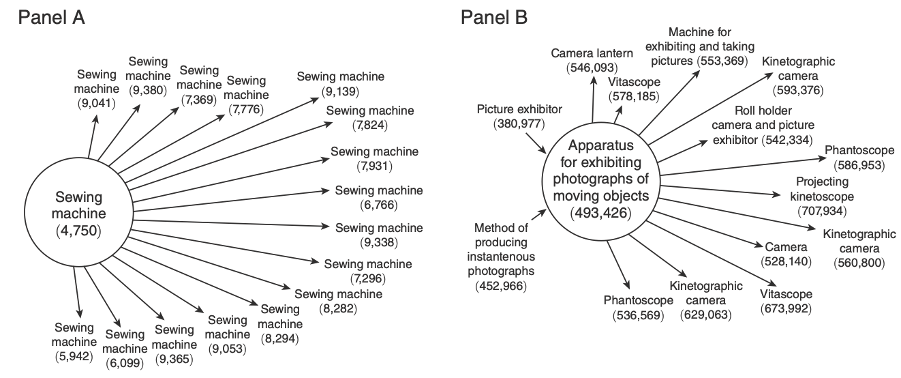
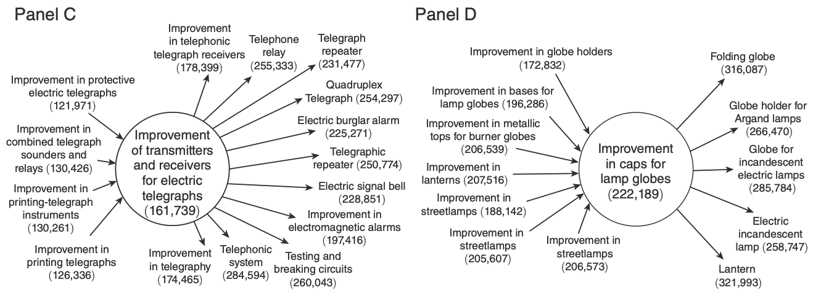
Validation. A new measure is only credible if it agrees with existing ones where they overlap.
- Citations. Where citations exist, patents scored as more important receive more forward citations, at short and long horizons (Figure 7, Panel A).
- Economic value. Patent importance is positively related to the stock-market value of the patent (the KPSS measure of Kogan, Papanikolaou, Seru & Stoffman, 2017) (Figure 7, Panel B).
- Historical waves. The aggregate index picks out known innovation waves — the late nineteenth century, the 1920s–30s, and the period from the 1980s on — and tracks highly cited patents after 1940 (Figure 8). By industry, it moves from manufacturing and transportation in the nineteenth century to electrical equipment and chemicals in the mid-twentieth and computers and electronics at the end (Figure 9).
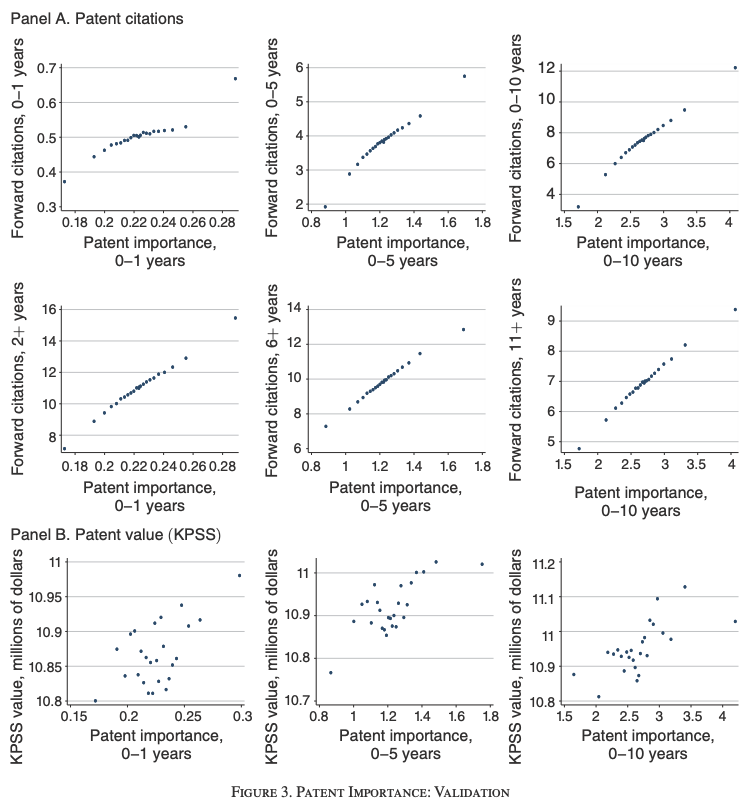
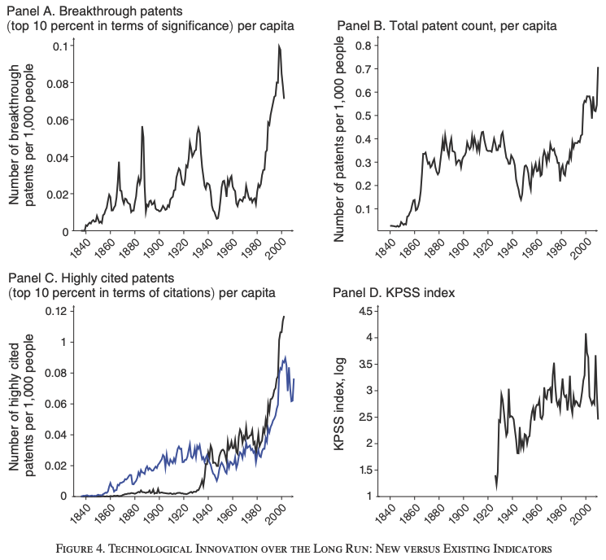
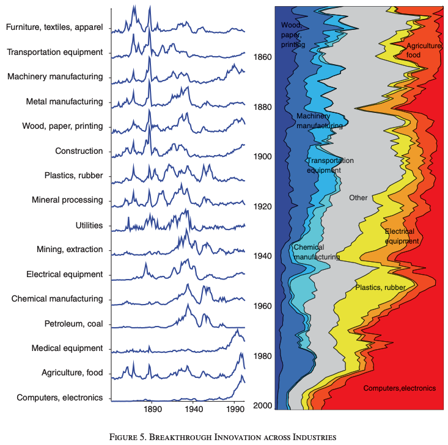
Limitations. The comparison windows are fixed, so “slow-burn” inventions whose influence arrives after ten years are underweighted. Sectors with rising patenting rates, such as software, mechanically have more later patents to be similar to, which can inflate forward similarity. And the corpus excludes non-patent literature such as scientific articles, so ideas that flow through science rather than patents are invisible.
The lesson is broader than patents. The measure works because the weighting scheme is designed around the economic concept: novelty is defined relative to what was known at the time, and that requires respecting the time ordering of the data.
3.3.4 When bag-of-words fails
All three stages share one unit of measurement, the isolated word, and that is where the method breaks: different words with the same meaning look unrelated, and the same words in a different order look identical. Every count-based representation, however carefully weighted, assumes position does not matter.
Imagine you want to track escalation in a trade war by measuring how much each new announcement differs from the one before. You turn each announcement into a vector and compute the distance between consecutive vectors: a large distance signals a new development, a small one signals more of the same. Now compare
The US imposed tariffs on China. and China imposed tariffs on the US.
Count the words and the two sentences produce exactly the same vector, so the measured distance between them is zero. In trade policy they describe opposite shocks: a US tariff in one case, Chinese retaliation in the other, each falling on a different set of exporters. A bag-of-words model cannot tell them apart, and no reweighting of the counts will fix that. Recovering meaning requires a representation that knows which words appear near which, and in what order.
Similar approaches are used in other contexts: 1. Firm product similarity. Hoberg and Phillips compare two firms’ 10-K product descriptions — as word-count vectors, scored by cosine similarity — to measure how closely the firms compete, and then use the pairwise similarities to redraw industry boundaries (Hoberg & Phillips, 2016. 2. [need to add more examples]
3.4 Static word embeddings
3.4.1 Learning meaning from context
The way forward is an old idea from linguistics, the distributional hypothesis: “You shall know a word by the company it keeps” (Firth, 1957); or, in Wittgenstein’s version, the meaning of a word is its use in the language. Words that appear in similar contexts have similar meanings. Tariff and quota are rarely in the same sentence, but they appear around the same words — imports, protection, retaliation.
Word embeddings turn this into an estimation problem: treat each word’s meaning as a vector of parameters, and choose the vectors to predict context. The skip-gram objective of Word2Vec (Mikolov et al., 2013) maximizes the average log probability of the words within \(m\) positions of each target word \(w_t\): \[ J(\theta) \;=\; \frac{1}{T} \sum_{t=1}^{T} \;\sum_{-m \le j \le m,\; j \ne 0} \log P(w_{t+j} \mid w_t), \qquad P(o \mid c) = \frac{\exp(\mathbf{u}_o^{\top} \mathbf{v}_c)}{\sum_{w \in V} \exp(\mathbf{u}_w^{\top} \mathbf{v}_c)}, \] where \(\mathbf{v}_c\) is the vector of the center word and \(\mathbf{u}_o\) the vector of a context word. The probability is high when the two vectors point in similar directions. To raise the probability that tariff and trade appear together, training pulls their vectors closer. Words that share contexts end up near each other, even if they never co-occur. GloVe (Pennington, Socher & Manning, 2014) reaches similar vectors by factorizing a matrix of global word co-occurrence counts.
3.4.2 The geometry of meaning
The result is a dense vector for each word — typically 100 to 300 real numbers rather than a one-hot vector as long as the vocabulary. Distance in this space now means something.
- Synonyms and related terms are close. Protectionism sits near trade barriers; tariff near quota; election near ballot.
- Relations are directions. Vector arithmetic recovers analogies: \[ \vec{\text{Beijing}} - \vec{\text{China}} + \vec{\text{USA}} \;\approx\; \vec{\text{Washington}}. \] The difference \(\vec{\text{Beijing}} - \vec{\text{China}}\) encodes “capital of,” and adding it to another country lands near that country’s capital.
That second property is what makes embeddings a measurement tool for economists. If a relation such as male versus female is a direction in the space, we can measure how strongly any other word — an occupation, an adjective — leans along it.
3.4.3 Application: a century of stereotypes
Garg, Schiebinger, Jurafsky and Zou (2018) use this geometry to measure gender and ethnic stereotypes in text over 100 years.
- Word lists. Define group words \(G\) that are explicitly gendered (she, female, her versus he, male, his), and average each list into a group vector \(\mathbf{v}_{\text{woman}}\) and \(\mathbf{v}_{\text{man}}\). Define neutral words \(M\) to test, such as occupations (nurse, engineer).
- Relative norm distance. For a set of neutral words, \[ \text{Bias}(M) \;=\; \sum_{\mathbf{v}_m \in M} \Big( \underbrace{\|\mathbf{v}_m - \mathbf{v}_{\text{man}}\|_2}_{\text{distance to men}} - \underbrace{\|\mathbf{v}_m - \mathbf{v}_{\text{woman}}\|_2}_{\text{distance to women}} \Big). \] A positive value means the words sit closer to women; a negative value, closer to men.
- Validation. Occupation-level bias scores line up with Census data on the share of women in each occupation (Figure 10). The embedding has learned something real about the world that produced the text.
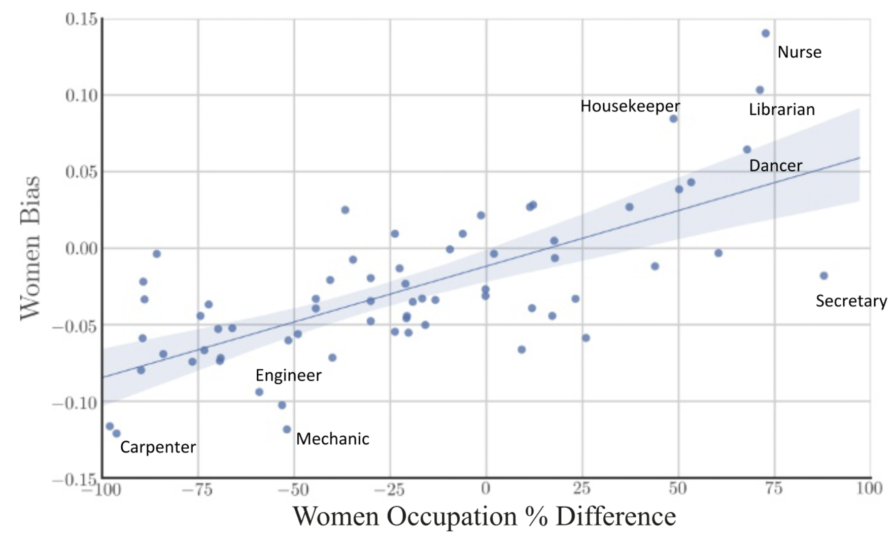
Because embeddings can be trained on text from any decade, the same metric can be computed decade by decade, turning a corpus into a historical time series of attitudes.
3.4.4 Application: gender attitudes of individual judges
Ash, Chen and Ornaghi (2024) push the method down to the individual level: can we measure the gender attitudes of a single U.S. federal appellate judge from their writing?
- One embedding per judge. Train a GloVe model from scratch on each judge’s majority opinions. A single judge writes far less text than a news corpus, so the authors draw 25 bootstrap samples of sentences (with replacement) per judge and average across them.
- Cultural dimensions. Define a gender dimension \(\vec{G} = \vec{\text{male}} - \vec{\text{female}}\) and a stereotype dimension \(\vec{S} = \vec{\text{career}} - \vec{\text{family}}\), each built from word lists.
- Gender slant. A judge’s slant is the cosine of the angle between the two dimensions: \[ \text{Slant}_j = \cos\theta = \frac{\vec{G} \cdot \vec{S}}{\|\vec{G}\|\,\|\vec{S}\|}. \] Slant near 1 means that, in this judge’s language, male goes with career and female with family; near 0, the two dimensions are unrelated; negative, the association is reversed (Figure 11).
- Validation. Does each judge-specific model actually learn gender? The authors take common male and female first names from the Census, compute each name’s similarity to the judge’s gender dimension, and regress a male-name indicator on that similarity separately for each judge. The test passes for most judges, and more reliably the more text a judge has written (Figure 12).
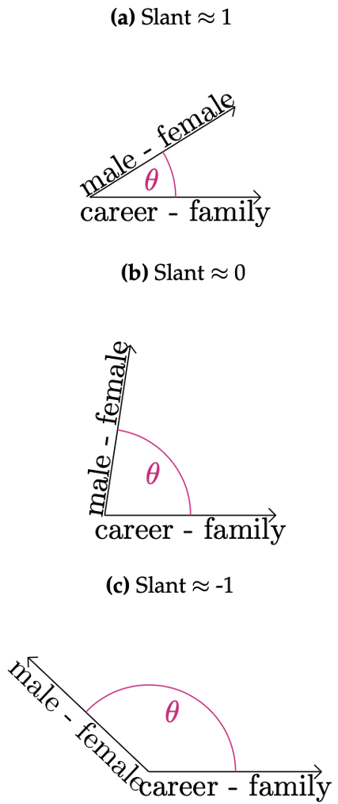
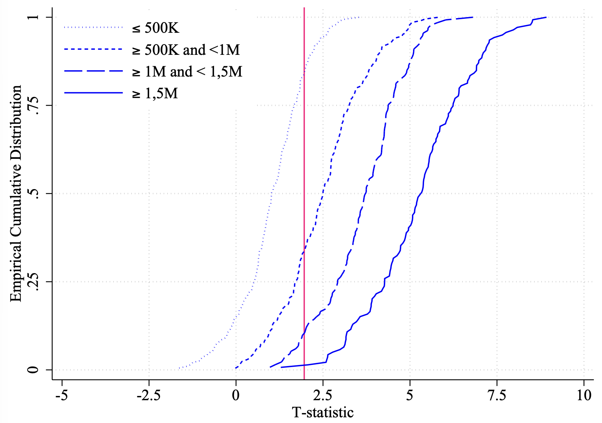
With a validated individual-level measure in hand, the paper relates slant to judicial behavior: judges with higher slant vote more conservatively in gender-related cases and treat female colleagues differently. The point for this course is the pipeline: a latent attitude, measured from text through geometry, validated against an external benchmark, and then used as a variable in an economic analysis.
3.5 Contextual embeddings
3.5.1 From static to dynamic representations
Static embeddings assign one vector per word, regardless of context. That fails when a word has several meanings:
- Context A: “The bank of the river.”
- Context B: “The federal bank policy.”
A static model gives bank a single vector, an average of the river sense and the finance sense that represents neither well.
Contextual models replace the fixed vector with a function of the word and its surroundings: \[ \text{static: } \mathbf{v}(\text{word}) = \mathbf{x} \qquad\longrightarrow\qquad \text{contextual: } \mathbf{h}(\text{word}) = f(\text{word}, \text{context}). \] The mechanism behind modern contextual models is self-attention. For word \(i\), the contextualized vector is a weighted average of the representations of every word in the sequence: \[ \mathbf{h}_i \;=\; \sum_{j} \alpha_{ij}\, \mathbf{v}_j, \qquad \alpha_{ij} \ge 0,\;\; \sum_j \alpha_{ij} = 1, \] where the attention weights \(\alpha_{ij}\) are themselves learned functions of the two words (in a transformer, a softmax over scaled inner products of learned “query” and “key” projections). In “the bank of the river,” bank puts weight on river and its vector is pulled toward the geographic sense; in “the federal bank policy,” it puts weight on federal and is pulled toward the financial sense (Figure 13). One word, two vectors.
![Two side-by-side vector sketches sharing the same axes. In each, a gray arrow for the static bank vector points up and to the right at 45 degrees. Left panel, context A: a dark blue arrow for river points steeply upward, and an orange arrow for the contextual bank vector lies between the gray and dark blue arrows, closer to river, with a dotted line showing the pull. Right panel, context B: a blue arrow for federal points shallowly to the right, and the orange contextual bank arrow lies between the gray and blue arrows, closer to federal.](lec0_files/figure-html/fig-attention-bank-output-1.png)
3.5.2 The Transformer
Everything so far fits in one sentence: a transformer is the function \(f\) in \(\mathbf{h} = f(\text{word}, \text{context})\), built by stacking self-attention layers and estimated by predicting text (Vaswani et al. 2017, Attention Is All You Need). This section opens that sentence up to see where each failure of the earlier representations is repaired.
Take the order of each word into account: positional encoding. Self-attention on its own has a property worth pausing on: it does not know where words are. The weighted average \(\mathbf{h}_i = \sum_j \alpha_{ij}\mathbf{v}_j\) runs over a set of vectors, and the weights depend only on the vectors themselves, so shuffling the words shuffles the outputs without changing any of them. A model made of attention alone would be a bag of words with learned weights, and the US imposed tariffs on China would again share a representation with China imposed tariffs on the US. The fix is to put position into the input. Word \(i\) enters the first layer as \[ \mathbf{z}_i \;=\; \mathbf{x}_i + \mathbf{p}_i, \] the sum of its word embedding \(\mathbf{x}_i\) — a static vector of the kind introduced in the previous section, now learned jointly with everything else — and a vector \(\mathbf{p}_i\) that encodes “position \(i\)”. Both repairs the counting-words summary asked for are now present: learned word vectors for different words, same meaning, and positions for same words, different order.
Take surrounding words into account: self-attention. The attention weights come from three learned linear maps of the layer’s inputs: \[ \mathbf{q}_i = \mathbf{W}_Q \mathbf{z}_i,\qquad \mathbf{k}_j = \mathbf{W}_K \mathbf{z}_j,\qquad \mathbf{v}_j = \mathbf{W}_V \mathbf{z}_j, \qquad \alpha_{ij} \;=\; \frac{\exp\!\big(\mathbf{q}_i^{\top}\mathbf{k}_j/\sqrt{d}\big)}{\sum_{l}\exp\!\big(\mathbf{q}_i^{\top}\mathbf{k}_l/\sqrt{d}\big)}. \]
Read the formula as a soft dictionary lookup, a framing Kevin Murphy uses in his textbook and that Yuan Meng’s blog post develops at length (Murphy 2022, Probabilistic Machine Learning: An Introduction; Meng 2024, Attention as Soft Dictionary Lookup). A Python dictionary stores key–value pairs and answers d[query] by finding the one key that matches the query exactly and returning its value. Self-attention runs the same lookup with the exact match relaxed. Every word in the sentence contributes an entry: a key \(\mathbf{k}_j\) (what word \(j\) can be looked up by) and a value \(\mathbf{v}_j\) (what it returns). The word being contextualized supplies the query \(\mathbf{q}_i\) (what word \(i\) is looking up). Where a dictionary demands an exact match, attention scores every key by its compatibility with the query — the inner product \(\mathbf{q}_i^{\top}\mathbf{k}_j\), large when word \(j\) offers what word \(i\) is looking for. And where a dictionary returns one value, attention returns all of them, weighted: the softmax turns the scores into weights that are positive and sum to one, and \(\mathbf{h}_i = \sum_j \alpha_{ij}\mathbf{v}_j\) is the weighted average. A hard lookup is the limiting case in which one weight goes to one and the rest to zero. In the bank of the river, the query of bank is most compatible with the key of river, so the value of river dominates the lookup — the pull drawn in Figure 13. Figure 14 lays the whole computation out for bank, one dictionary entry per row. (The division by \(\sqrt{d}\) only stops the inner products from growing with the dimension of the vectors, which would make the softmax too sharp.)
![Flow diagram in five columns. Left, five boxes for the words the, bank, of, the and river, each with a key and a value; the bank box also carries the query and is highlighted. Orange lines fan from the bank box to a column of five scores, 0.5, 1.2, 0.9, 0.3 and 2.4, which also receive a gray arrow from each word's key. Next, horizontal bars for the softmax weights 0.08, 0.17, 0.12, 0.07 and 0.56. Then a column of terms, each weight times that word's value. Right, arrows converge on a box for h of bank, the sum of the scaled values.](lec0_files/figure-html/fig-attention-market-output-1.png)
The softmax should look familiar. It has the same form as the skip-gram probability \(P(o \mid c)\) from the static-embedding section: an exponential of an inner product, divided by the sum of such exponentials. Two things have changed. The vectors being compared are now projections of this sentence’s vectors rather than fixed word vectors, and the sum runs over the words of the sentence rather than over the whole vocabulary.
Finally, a transformer does not compute one such weighting but several at once, called heads. Each head has its own \(\mathbf{W}_Q, \mathbf{W}_K, \mathbf{W}_V\), and so its own rule for which words to look at. Figure 15 shows two of BERT’s 144 heads, chosen because they give the verb raise its most concentrated choices: one puts all of its weight on the word after the verb, the other most of it on the word before.
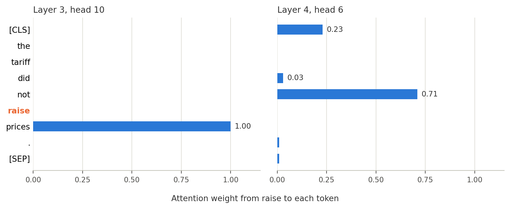
One layer, many layers. Figure 16 lays out the pieces. Attention mixes information across positions. The other half of a layer transforms each position on its own: a small feed-forward network applied to every \(\mathbf{h}_i\) separately. Both halves add their result to their input rather than replacing it (a residual connection), so each layer is a correction to the representation it received. Stack \(L\) such layers, with the output of one as the input of the next, and the representation becomes more abstract as it rises: early layers settle local questions such as which sense of bank is meant; later layers carry who did what to whom across a paragraph — the long-range structure that count vectors throw away and static embeddings cannot represent. BERT-base has 12 layers and returns a 768-dimensional \(\mathbf{h}_i\) for every token; the GPT family runs to hundreds of billions of parameters.
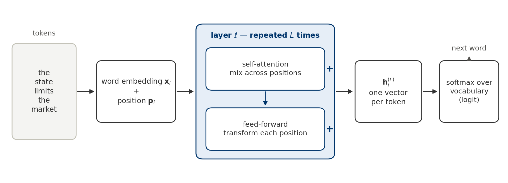
How it is estimated. None of these parameters is set by hand. The model is fit the way Word2Vec was, by predicting text, with one change of target. Where skip-gram predicted a word’s neighbours from a single vector, a transformer predicts the next word from the context-dependent vector at the end of the sequence: \[ P(w_{t+1} \mid w_1, \dots, w_t) \;=\; \frac{\exp\!\big(\mathbf{u}_{w_{t+1}}^{\top}\mathbf{h}^{(L)}_t\big)}{\sum_{w \in V}\exp\!\big(\mathbf{u}_{w}^{\top}\mathbf{h}^{(L)}_t\big)}, \qquad \max_{\theta}\; \sum_{t} \log P(w_{t+1} \mid w_1, \dots, w_t). \] This is the objective of the GPT family (Radford et al., 2018). BERT (Devlin et al., 2019) instead hides a fraction of the words and predicts each one from both sides. Either way the estimator is maximum likelihood, the outcome is categorical with \(|V|\) classes, and the “regressors” are the entire preceding text passed through \(L\) layers. The output layer is a multinomial logit over the vocabulary whose index is a deep function of the history.
In the vocabulary of the measurement section, a transformer is a measurement function \(m(\cdot)\) with \(10^8\) to \(10^{11}\) parameters: it maps a sequence of words to a dense vector per word, it was estimated on text, and its features were selected to predict text. What to do with it is the next question.
Code to reproduce the BERT figures in this section (needs torch and transformers, which are not part of the course environment)
import torch
from transformers import AutoTokenizer, AutoModel
tok = AutoTokenizer.from_pretrained("bert-base-uncased")
bert = AutoModel.from_pretrained("bert-base-uncased", output_attentions=True).eval()
def encode(sentence, model):
batch = tok(sentence, return_tensors="pt")
with torch.no_grad():
out = model(**batch)
tokens = tok.convert_ids_to_tokens(batch["input_ids"][0])
return tokens, out.last_hidden_state[0], out.attentions
def cosine(a, b):
return float(a @ b / (a.norm() * b.norm()))
def sentence_vector(h, tokens): # mean over word tokens
keep = [i for i, t in enumerate(tokens) if t not in ("[CLS]", "[SEP]")]
return h[keep].mean(0)
# Sentence pair for the order panel of the ablation figure (BERT with and without positions).
# bert-base-uncased lowercases its input, so "US" and "China" are the tokens "us" and "china".
S1, S2 = "The US imposed tariffs on China.", "China imposed tariffs on the US."
no_pos = AutoModel.from_pretrained("bert-base-uncased").eval()
no_pos.embeddings.position_embeddings.weight.data.zero_()
for label, model in [("BERT", bert), ("BERT, positions removed", no_pos)]:
t1, h1, _ = encode(S1, model)
t2, h2, _ = encode(S2, model)
print(label,
"sentence:", round(cosine(sentence_vector(h1, t1), sentence_vector(h2, t2)), 3),
"word china:", round(cosine(h1[t1.index("china")], h2[t2.index("china")]), 3))
# Figure: attention as a choice distribution
tokens, _, att = encode("The tariff did not raise prices.", bert)
A = torch.stack([a[0] for a in att]) # [layers, heads, tokens, tokens]
i = tokens.index("raise")
for target in ("prices", "not"):
j = tokens.index(target)
layer, head = divmod(int(A[:, :, i, j].argmax()), A.shape[1])
print(f"raise -> {target}: layer {layer + 1}, head {head + 1}:",
[round(float(v), 2) for v in A[layer, head, i]])
# Figure: which ingredient does what (positions x attention layers, two sentence pairs)
def embed_only(sentence, model): # output of the embedding layer: no attention layers on top
batch = tok(sentence, return_tensors="pt")
with torch.no_grad():
h = model.embeddings(batch["input_ids"])[0]
return tok.convert_ids_to_tokens(batch["input_ids"][0]), h
def final_layer(sentence, model):
tokens, h, _ = encode(sentence, model)
return tokens, h
pairs = [(S1, S2, "china"),
("The river bank was flooded.", "The central bank was cautious.", "bank")]
versions = [("word vectors only", no_pos, embed_only), ("word + position vectors", bert, embed_only),
("12 layers, no positions", no_pos, final_layer), ("BERT", bert, final_layer)]
for A, B, w in pairs:
for label, model, vectors in versions:
tA, hA = vectors(A, model)
tB, hB = vectors(B, model)
print(f"{A} | {B} | {label}:",
"sentence:", round(cosine(sentence_vector(hA, tA), sentence_vector(hB, tB)), 3),
f"word {w}:", round(cosine(hA[tA.index(w)], hB[tB.index(w)]), 3))3.5.3 Discussion
Dimensions in the representation space capture various aspects of the input data, including the syntactic structure, semantic meaning, and contextual relationships between words.
Figure 17 puts the pieces of this section side by side by switching them off one at a time. Four versions of BERT-base are run on two pairs of sentences: 1. the word vectors alone, which is the static lookup table of the previous section; 2. word plus position vectors with no layers on top; 3. the twelve attention layers with the position table set to zero; and 4. the full model.
The left panel asks whether the representation can tell the US imposed tariffs on China from China imposed tariffs on the US. A bag-of-words model sees the same six words in both and cannot. Word order matters whenever text records who acts on whom: the two sentences describe opposite shocks, but they look identical to an order-blind measure. The right panel asks whether the representation gives bank different vectors in the river bank was flooded and the central bank was cautious. A static embedding assigns one vector per word, so both senses get blurred together. That blurring contaminates any text measure built on economic vocabulary, such as a news-based index of financial-sector stress that also picks up flood reports.
![Two dot plots with four rows each. Left, same words in two orders: sentence and word similarity are both 1 with word vectors alone and with attention but no positions; with positions but no layers the sentence similarity is 1 and the word similarity 0.905; with full BERT they are 0.982 and 0.699. Right, bank in two senses: word similarity is 1 with no layers whether or not positions are present, 0.625 with attention but no positions, and 0.484 with full BERT; sentence similarity runs from 0.65 to 0.79.](lec0_files/figure-html/fig-ablation-2x2-output-1.png)
The two panels move at different rows. Order is detected only in the last one. With positions but no layers, each token is tagged with its slot, and the word China does differ across the two sentences, but nothing reads the tags: the sum of word plus position vectors is the same under any permutation, so averaging the tokens returns the bag-of-words answer. With layers but no positions, attention is permutation-blind, and the two orders are identical at every layer. Sense is resolved as soon as attention is present, with or without positions, because attention can read which other words are in the sentence; positions only sharpen the split by letting bank attend to the word just before it. The section’s three ingredients thus answer the three failures met along the way: learned word vectors for different words with the same meaning, attention for the same word with different meanings, and attention reading positions for the same words in a different order.
For measurement, the figure is a way of asking what a representation responds to. The embedding and the pooling rule together are the measurement function \(m(\cdot)\), and a construct that lives in word order, such as who imposed tariffs on whom, is invisible to every row but the last. Even there it moves the sentence cosine by less than two hundredths, against a gap of several tenths between two unrelated sentences. The next section takes up the choice of representation as a research decision with exactly this question at its center.
Are contextual embeddings perfect?
Figure 5 left us with a failure: two sentences that a trade economist reads as one claim, with a cosine similarity of exactly zero. Most of the lecture since has been a sequence of repairs — static embeddings give related words nearby vectors, and contextual embeddings tell the river bank from the federal one. Do the repairs reach the Lerner pair? In a narrow sense they do. How they do it shows the limit of any similarity measure learned from text alone.
Closer, for the wrong reason Figure 18 scores the pairs with all-MiniLM-L6-v2, a widely used sentence-embedding model: a small contextual transformer fine-tuned so that sentences with similar meanings land close together (Reimers & Gurevych 2019, Sentence-BERT; model card). The Lerner pair rises from 0 under TF–IDF to 0.79. A reader who stopped there might conclude that the model has learned the economics.
It has not. The same model scores Document A against its own reversal — the import tariff raised sales abroad — at 0.91: the sentence that contradicts A sits closer to it than the sentence that agrees. The opposite policy, an export subsidy that raises overseas purchases, scores 0.67, not far below. Only a sentence on another subject entirely, interest rates, falls away. What the model has captured is topic. Every one of these sentences is about trade policy and trade flows, built from overlapping vocabulary; which way anything moves barely registers.
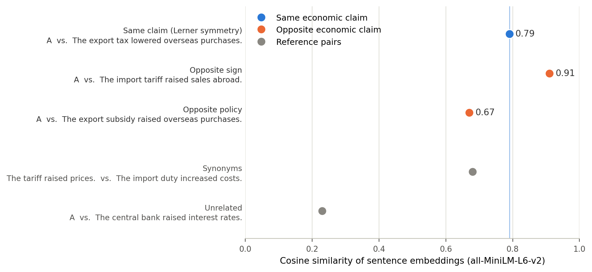
Why: antonyms share contexts The word-level numbers in Table 3 show where this comes from. They are cosine similarities between GloVe vectors — static embeddings of the kind introduced earlier in this lecture, trained on Wikipedia and newswire (Pennington, Socher & Manning 2014). Increased and reduced are closer to each other (0.90) than reduced is to its synonym lowered (0.68). Tariff is closer to subsidy (0.73) than to tax (0.62), and import and export are nearly the same vector (0.93).
This is not a defect in training. It is the distributional hypothesis working as designed: words get nearby vectors when they appear in similar contexts, and antonyms do — prices rose or fell sharply; a tariff or a subsidy on steel. Context reveals what a word is about, and the direction of an effect is not something a word is about. It is the blind spot the bag-of-words section found in negation (“the tariff did not raise prices”), carried over into dense vectors.
glove-wiki-gigaword-50 release). The last row is the polysemy problem in miniature: a single vector for duty has to serve the customs meaning and the moral one, and the latter dominates the corpus.
| Word pair | Relationship | GloVe cosine |
|---|---|---|
| abroad · overseas | synonyms | 0.86 |
| reduced · lowered | synonyms | 0.68 |
| increased · reduced | antonyms | 0.90 |
| raised · lowered | antonyms | 0.63 |
| tariff · tax | the two instruments of the Lerner pair | 0.62 |
| tariff · subsidy | opposite instruments | 0.73 |
| import · export | opposite directions of trade | 0.93 |
| tariff · duty | synonyms in trade, but duty usually means obligation | 0.32 |
Lerner symmetry is a harder case still, because it is a fact of a different kind. That a uniform import tariff and a uniform export tax are the same policy is a theorem about general equilibrium, not a regularity in how the phrases are used. Import tariff and export tax do appear in similar contexts — that is why the sentence model scores them 0.79 — but A’s reversal shares even more of A’s context, and nothing in the text marks the Lerner pair as the one that agrees. Contextual models do not change this: they resolve polysemy, which is a fact about usage, and the model in Figure 18 is itself contextual. Nor will more text of the same kind supply the missing information. What would supply it is a training signal that encodes the economics — pairs labelled these two make the same claim and these two do not. That is not more data; it is a criterion, and it has to come from the researcher.
What about large language models? Asking a large language model directly — do these two sentences make the same economic claim? — is a different kind of instrument. Lerner symmetry is a standard textbook result, so a capable model may well recognize the pair and name the theorem. But that is closer to recalling a stated result than to measuring similarity, and it has two limits. It need not extend to an equivalence that is specific to your question and not already written down. And the criteria behind its answer are not stated, so you cannot audit why it judged two documents alike — the problem that validation, in the measurement notes, is designed to solve.
TipTry it
Ask an LLM whether The import tariff reduced sales abroad and The export tax lowered overseas purchases make the same economic claim. Then ask the same question about A and its reversal, and about A and the export-subsidy sentence. Does it get all three right? Finally, restate the Lerner pair without the textbook vocabulary — no tariff, no tax — and ask again.
When similarity is the right measure
None of this makes embedding similarity a bad instrument; it makes it an instrument for a particular kind of construct. When the concept is itself about content, closeness in what two documents are about is close to the right object: how near a patent’s technology is to earlier patents (Kelly et al., 2021), or how far a syllabus sits from the research frontier (Biasi & Ma, 2022) — the document-similarity applications of the previous section. It is the wrong object when the concept is directional: whether a central bank is tightening or easing, whether a policy is protectionist or liberalizing, whether two policies have the same effect.
A practical test follows. Could two documents be about the same thing and still disagree on your construct? If they could, a similarity score will not separate them, and the measure has to be validated against a criterion that can.
NoteKey idea: representations of language are not representations of economics
Bag-of-words, static embeddings, and contextual embeddings are successively better models of how words are used. Whether “similar” in that sense is the similarity your research question needs — similar in topic, in policy instrument, or in predicted effect — is a question of construct definition. Theory answers it and an explicit criterion checks it; it cannot be read off the geometry. A model can do well on the benchmarks NLP uses to evaluate similarity and still fail the first trade economist who reads its output.
Code to reproduce the similarities (needs sentence-transformers and gensim, which are not part of the course environment)
from sentence_transformers import SentenceTransformer
import gensim.downloader as api
A = "The import tariff reduced sales abroad."
sentences = {
"lerner": "The export tax lowered overseas purchases.",
"opp_sign": "The import tariff raised sales abroad.",
"opp_policy":"The export subsidy raised overseas purchases.",
"unrelated": "The central bank raised interest rates.",
}
model = SentenceTransformer("sentence-transformers/all-MiniLM-L6-v2")
a = model.encode(A, normalize_embeddings=True)
for name, s in sentences.items():
print(f"{name:10s} {float(a @ model.encode(s, normalize_embeddings=True)):.2f}")
for s1, s2 in [("The tariff raised prices.", "The import duty increased costs.")]:
e = model.encode([s1, s2], normalize_embeddings=True)
print(f"{s1[:22]:22s} {float(e[0] @ e[1]):.2f}")
glove = api.load("glove-wiki-gigaword-50")
for w1, w2 in [("abroad", "overseas"), ("reduced", "lowered"), ("increased", "reduced"), ("raised", "lowered"),
("tariff", "tax"), ("tariff", "subsidy"), ("import", "export"), ("tariff", "duty")]:
print(f"{w1:10s} {w2:8s} {glove.similarity(w1, w2):.2f}")4 From representation to research
4.1 Choosing a method
There is no single best representation. The choice is a decision with two sides and three constraints.
| Choice | Options | |
|---|---|---|
| Upstream (the representation) | Model complexity | Simple (bag-of-words) … complex (BERT, LLMs) |
| Training source | Train from scratch … use a pre-trained model | |
| Downstream (the task) | Measurement | Quantify a concept |
| Inference | Estimate a causal effect, predict an outcome |
The constraints are the research goal (do you need interpretability or predictive accuracy?), the data (sample size and signal-to-noise ratio), and resources (compute, API budget, and time).
Three questions guide the upstream choice.
- Scratch or pre-trained? Pre-trained models carry “world knowledge” learned from massive corpora: they already know the general structure of language or images and often need only fine-tuning for a specific task. Training from scratch is cheaper to understand and makes the representation a function of your corpus alone, which is exactly what Ash, Chen and Ornaghi needed to measure each judge’s own associations.
- Interpretability or performance? Simple models keep the mapping from text to number transparent, which matters when the measure enters a causal analysis and you need to explain what drives it. Complex models capture nonlinearities and high-dimensional interactions, but their value has to be demonstrated through out-of-sample performance. Occam’s razor applies: on small samples, or for stable, coarse targets such as binary election outcomes, simple models often do as well or better.
- Does the model know the domain? A general-purpose model may not understand the vocabulary of politics, law, or finance as used by specialists; domain-adapted models (for example, BERT variants further trained on political or financial text) can help. On architecture, transformers excel at long-range dependencies, while older recurrent models may be enough for short, simple sequences.
4.2 Measuring high-dimensional concepts
The applications in economics fall into three broad patterns.
- Concept detection (dictionary-based). Detect the presence of a specific economic concept in raw text by counting terms from a word list. Examples: economic policy uncertainty in newspapers (Baker, Bloom & Davis, 2016); skill requirements in job ads (Deming & Kahn, 2018); news sentiment (Shapiro, Sudhof & Wilson, 2022); the diffusion of new technologies (Bloom, Hassan, Kalyani, Lerner & Tahoun, 2021).
- Vector space and the geometry of meaning. Measure latent attitudes through word associations in an embedding space.
- Bias within a corpus: stereotypes over a century of text (Garg et al., 2018); gender attitudes of individual judges (Ash, Chen & Ornaghi, 2024).
- Variation across corpora: how democracy and freedom are represented in Chinese-language encyclopedias with and without censorship (Yang & Roberts, 2021).
- Document similarity. Use the distance between two documents to proxy distance in an economically relevant space.
- Patent filings → the novelty and influence of technologies (Kelly et al., 2021).
- College syllabi and academic articles → the gap between what is taught and the research frontier (Biasi & Ma, 2022).